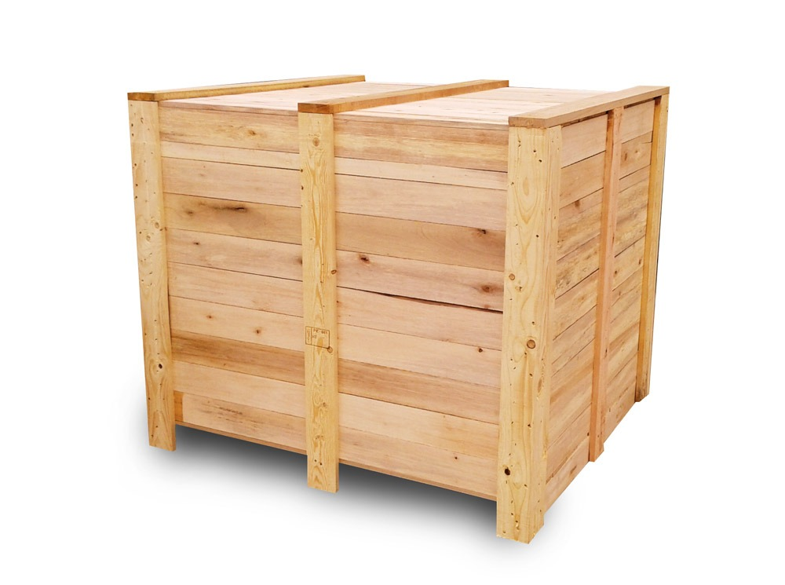
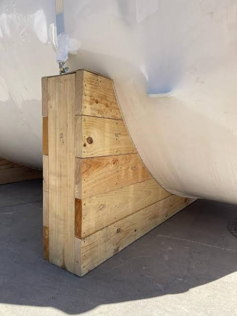

Tarimas
Elaboradas a base de madera de pino ásperas
Contamos con: Tratamiento térmico (HT-0000), Tarimas recicladas y nuevas, de color y blancas, con barrote y/o tacón
Medidas:
◉1.20 x 1 mts
◉Tarima de pino 40” x 40”
◉Tipo Chep 40” x 48”
◉1 x 1.20 mts
◉Tarimas en cualquier medida para envió nacional o a el extranjero

Vigas
Elaboradas a base de madera de pino ásperas.
Medidas:
◉12” x 12” x 8’
◉12” X 12” X 10’
◉12” X 12” X 16’
◉12” X 12” X 20’
◉6” x 6”x 8’ / 10’ / 16´
◉4” X 12” X 8’ Y 10’

Polin
Elaboradas a base de madera de pino ásperas.
Medidas:
◉4” X 4”
◉3” X 3”
◉3 ½” X 3 ½”
T.L.

Durmiente
Elaboradas a base de madera de pino ásperas.
Medidas:
◉7” X 8” X 8’
◉8” X 8” X 8’ Y 10’
◉Natural o creosota (uso ferrocarril)

Cajas industriales
Cajas en cualquier medida para envío nacional o a el extranjero.

Skids
Se elaboran de acuerdo a los requerimientos del cliente (personalizadas).

Cuñas
Medidas:
◉5 x 5 x 30 cm c/banquito de 2”
◉4x5x16 cm
◉Medida personalizada de acuerdo a los requerimientos del cliente

Cunas
Cunas en cualquier medida para envió nacional o a el extranjero